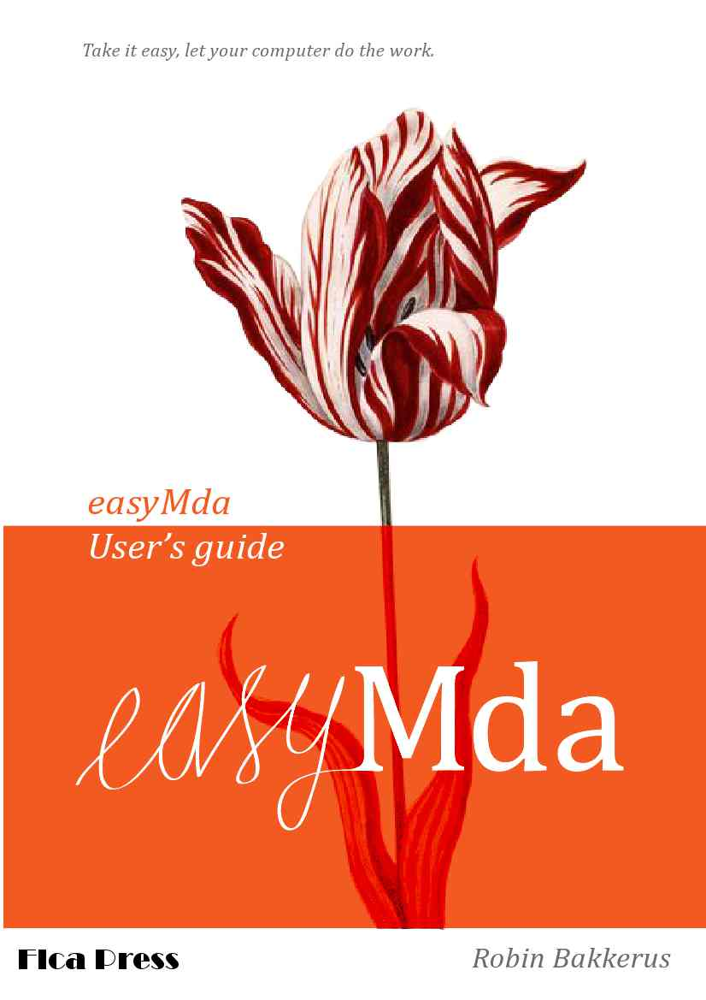
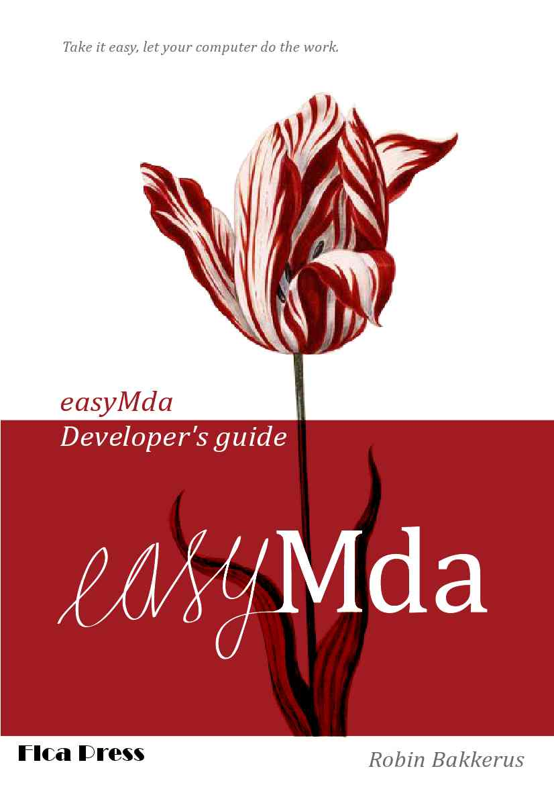

Welcome to EasyMda.
EasyMda is an Eclipse plugin that can generate source-code, from a model that is based on Java classes.
The main goal of this project is to provide the:
- most flexible (anything imaginable, can be modelled and generated),
- easiest to develop and to use,
- and also a very fast:
- multi purpose MDA/code-generator tool.
The main difference with other Mda tools is that easyMda does not rely on Uml nor a Dsl, instead it uses Java classes as it's model. The advantage over Uml and Dsl is that the combined power of
- Java reflection (to parse the model classes)
- Interfaces (to provide the generator with whatever information)
- Annotation's (for all kinds of fine-grained information)
- plus the incredible Jet engine
- make it so flexible and powerful.
User and developers guide's
 And there are also some youtube video's available:
Support or Contact
Having trouble with Pages? Check out our documentation or contact support and we’ll help you sort it out.